Dossiê vivo da obra
Contrato, kickoff, ordem de serviço, checklist e documentos permanecem vinculados à mesma obra.
Gestão integrada de obras, automação operacional e inteligência por voz: George. Contrato, planejamento, execução, suprimentos, RH e indicadores na mesma base — sem exportar planilha de um lado para o outro.
Operação por voz Documentos gerados pelo sistema Acessibilidade em campo
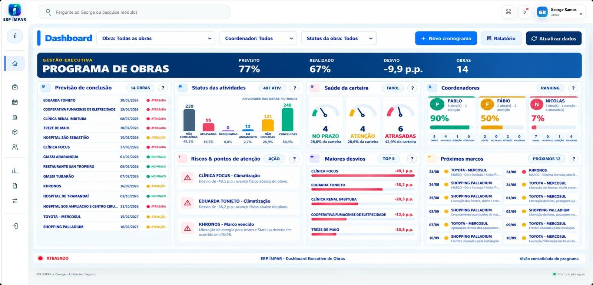
A apresentação percorre as funcionalidades já implantadas: da criação da obra ao acompanhamento executivo, incluindo documentos, planejamento, Agenda do Dia, viagens, suprimentos, relatórios e operação por voz.
Demonstração baseada em telas reais do sistema
Não são módulos isolados que exportam planilha um para o outro. É um único organismo: o que entra em qualquer ponto reaparece, já calculado, em todos os outros.
O George transforma a conversa em acesso ao ERP. A pessoa pode consultar uma obra, registrar informações, acompanhar pendências e tomar decisões ouvindo as respostas em voz alta.
George, leia as pendências da obra e registre minha atualização.
A Central de Obras é o ponto onde contrato, cronograma, orçamento, equipe, material, medição e documento se encontram. Antes, disperso em nove lugares; agora, o mesmo dado lido por todos os módulos.
O repositório da obra se monta sozinho: cronograma, resumo executivo, ordem de serviço, kickoff e checklist no mesmo lugar.
Contrato → Kickoff → OS → Checklist. Cada etapa concluída dispara o documento seguinte — o sistema escreve com os dados que já estão na Central.
Você confirma três campos e o ERP instala a obra inteira: 8 artefatos, da estrutura ao documento pronto.
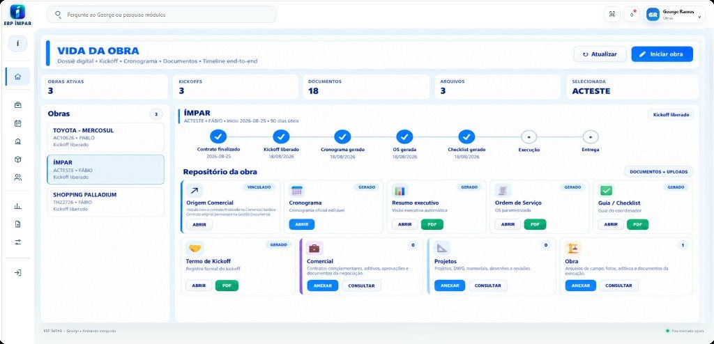
Os blocos abaixo correspondem às funcionalidades demonstradas no vídeo institucional do ERP ÍMPAR e do George.
Contrato, kickoff, ordem de serviço, checklist e documentos permanecem vinculados à mesma obra.
Planejamento parametrizado, edição em grade, predecessoras e visual executivo em Gantt.
Colaborador, obra, veículo e viagem alimentam a Agenda do Dia, o mapa de viagens e os registros do RH.
O fluxo consulta obra e centro de custo, monta a solicitação e mantém o protocolo do pedido.
Programa de obras, previsão contra execução, riscos, responsáveis e maiores desvios em uma tela.
Consultas e ações por voz, análise de foto, vídeo e áudio, relatórios, checklist e ata de reunião.
Durante o exercício, o executivo recebe pela voz o que realmente importa: o fechamento do dia, os desvios da carteira e o consolidado semanal. Sem parar, sem tocar no celular e sem navegar por telas.
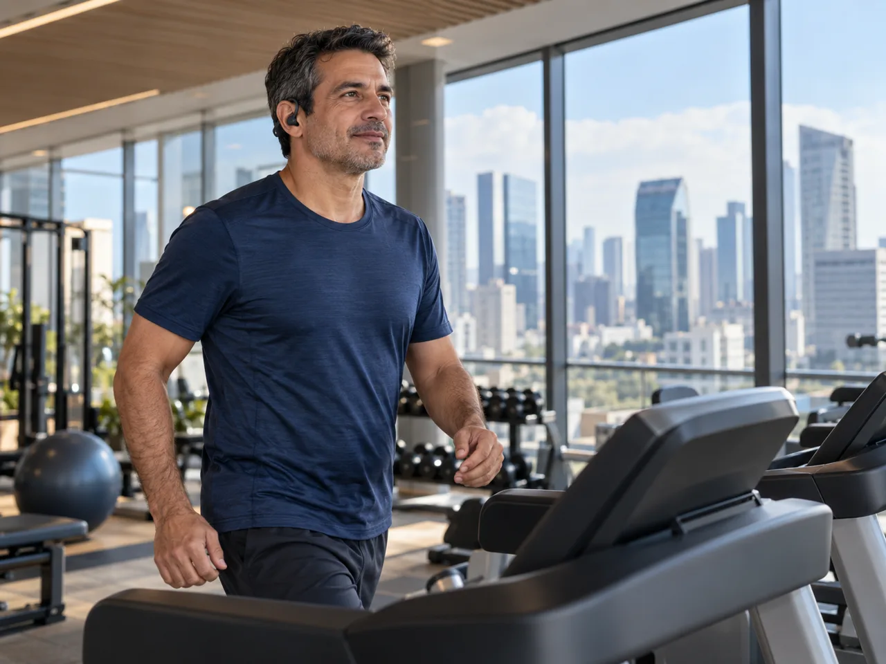
As capturas abaixo são do próprio sistema, com obras de exemplo.
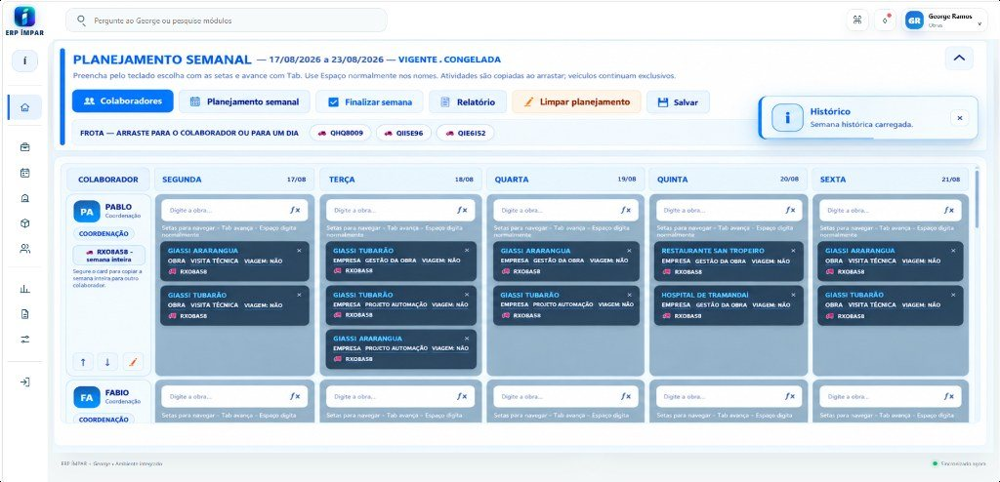
Arraste a placa e o veículo fica exclusivo do dia. Segure o card e replique a semana inteira. A semana vigente fica congelada, histórica e auditável — e alimenta a agenda do dia, o RH de viagens e a folha.
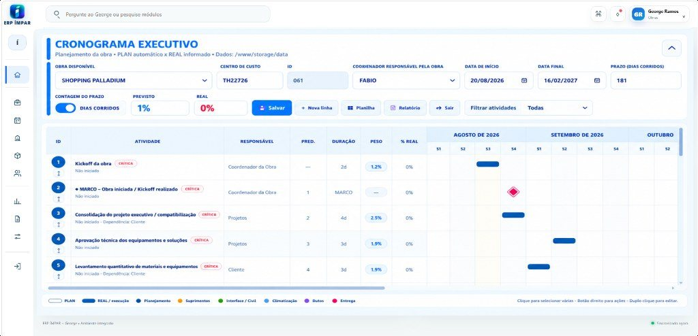
Ctrl+C e Ctrl+V em blocos, fórmulas e predecessoras que recalculam a data em cascata. Previsto automático e real informado na mesma linha, com a linha “hoje” se movendo sozinha.
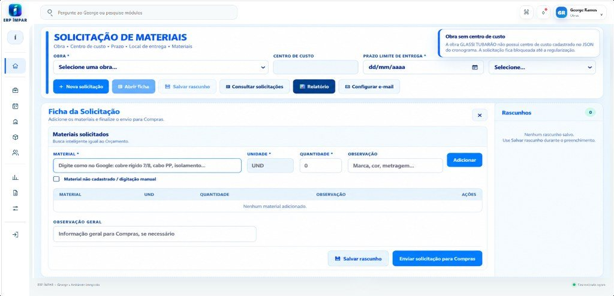
Obra sem centro de custo no cronograma? A solicitação fica bloqueada até regularizar. Busca inteligente como no Google, validação de centro de custo e prazo, e o pedido sai por e-mail já formatado.
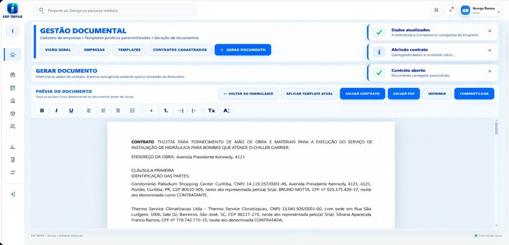
CNPJ, endereço da obra, representantes, objeto e escopo entram direto do cadastro. O ERP monta o contrato, gera o PDF e mantém tudo amarrado à obra certa.
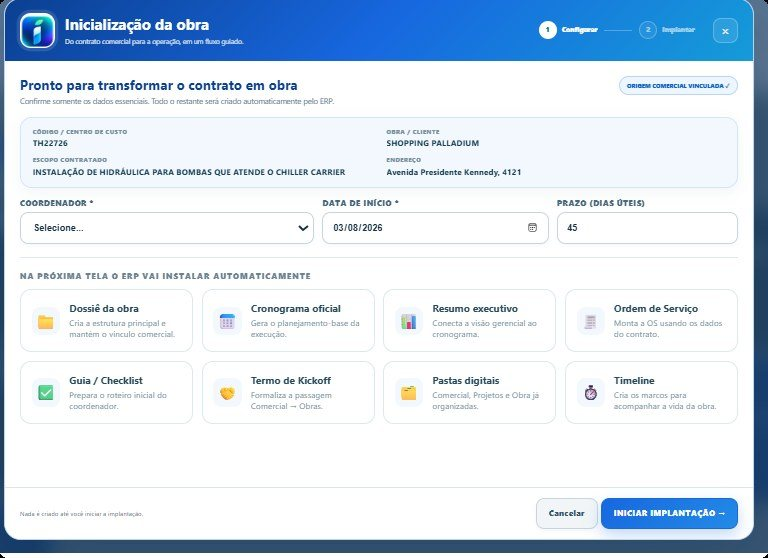
Da estrutura ao documento pronto: cronograma, resumo executivo, ordem de serviço, kickoff e checklist. Nada é criado até você iniciar a implantação.
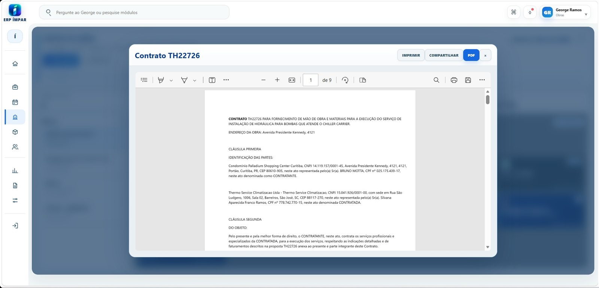
Imprimir, compartilhar link ou exportar — sem redesenhar nada. O documento sai com o número da obra, o centro de custo e o histórico de versões.
Explore uma sequência real do ERP ÍMPAR. Cada tela reaproveita o que a etapa anterior já registrou.
Com o telefone fixado e a interação totalmente por voz, o gestor pode concluir uma tarefa sem tirar as mãos do volante — sempre respeitando a condução segura.
“George, feche a Agenda do Dia, gere o PDF e compartilhe com a equipe.”
O George não é um assistente ao lado do ERP: ele é a interface. Executa as funções do sistema por voz, participa de reuniões e interpreta o que chega do campo.
Executa todas as funções do ERP falando — consultar, lançar, atualizar e confirmar passo a passo.
Grava, gera ata, interpreta vídeos e documentos, e devolve pendências e planos de ação.
Foto, vídeo e áudio: identifica itens, reconhece pessoas e transcreve falas — e transforma a mídia em relatório, checklist e ata.
Cada leitura sai amarrada à obra, à atividade e ao centro de custo correspondentes.
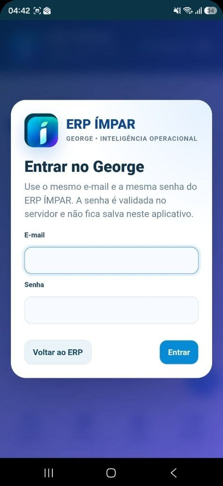
Pessoas com limitações motoras nos braços ou nas mãos podem operar funções do ERP conversando naturalmente com o George. A tecnologia se adapta à pessoa — não o contrário.
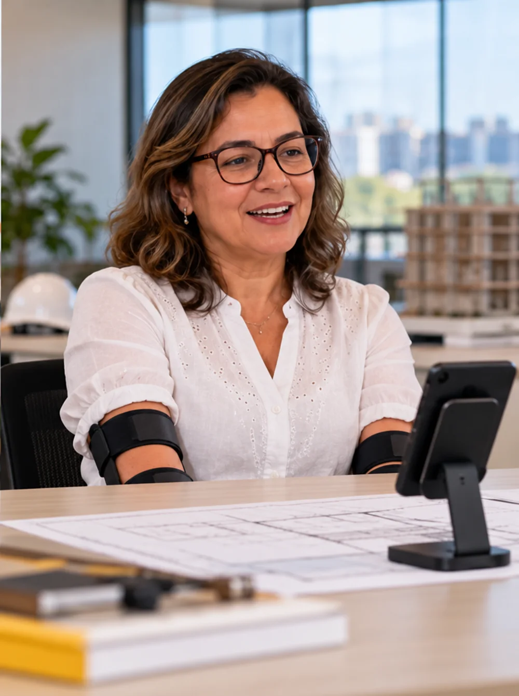
É daí que sai o dashboard executivo: nenhum indicador é digitado à mão.
Projetos disponíveis, com orçamento calculado por quantidade × unitário.
Prazo da obra de exemplo, com 5 etapas e 19 marcos datados.
Instalados de uma vez na inicialização, a partir de três campos.
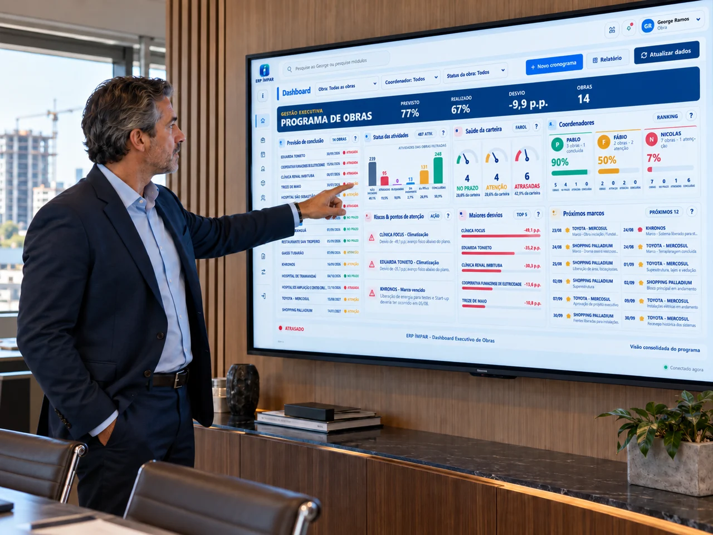
O diretor enxerga o portfólio completo, identifica onde agir e chega ao detalhe que explica cada desvio. Tudo nasce da mesma operação, sem consolidar planilhas paralelas.
Ouvir e falarGeorge entende a solicitação e responde em voz alta.
Agir com autonomiaMenos dependência de tela, teclado e mouse.
Trabalhar de qualquer lugarA mesma operação no escritório, na obra ou em movimento.
Sistema integrado, inovador e preparado para o futuro — nascido na obra, feito por quem entende e se importa.
Contratos, obras, planejamento, execução, suprimentos, medir, frota, RH de viagens, documentos, relatórios e indicadores em uma única base de dados.
Voz, reuniões, atas, análise de foto, vídeo e áudio, relatórios e checklists — a interface que faz a operação acontecer sem tirar as mãos do trabalho.
Veja o George operar: da obra ao relatório, em minutos. Automação e inteligência na mesma solução.
Role para ver a captura inteira · Esc para fechar